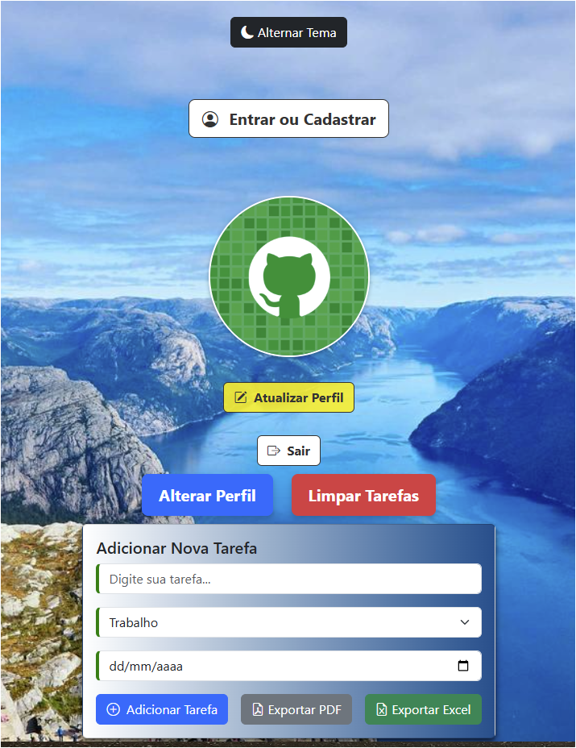
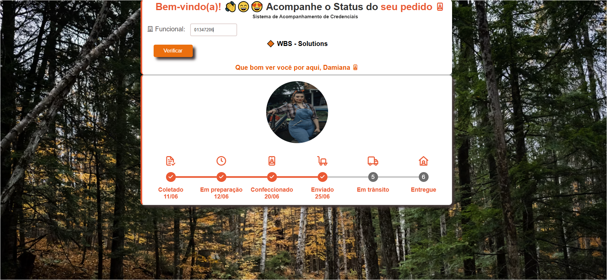
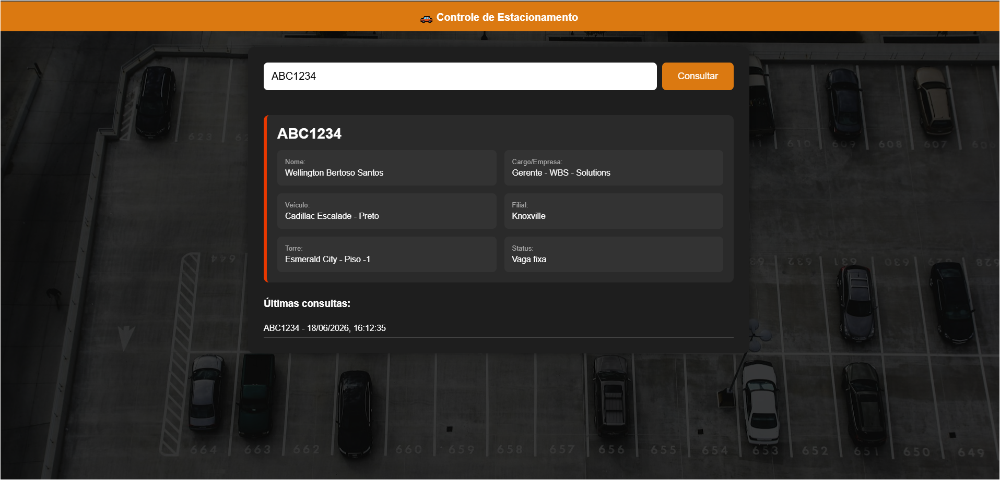
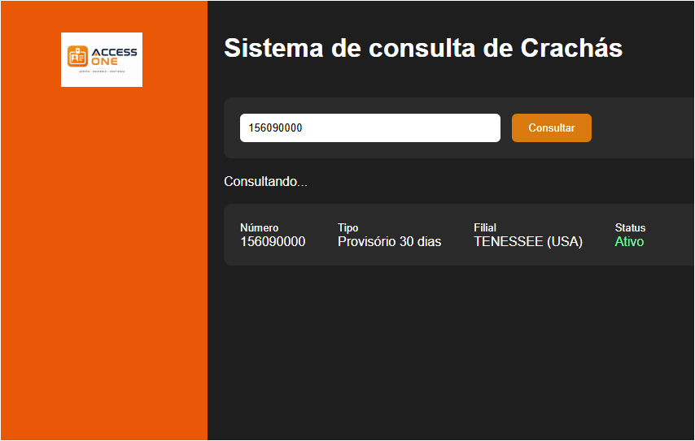

 Gerenciador de Tarefas Gerenciador de tarefas simples e eficiente para organizar seu dia a dia com praticidade. HTML CSS JavaScript Bootstrap Demo GitHub
ONG Educar para mudar Projeto acadêmico voltado ao desenvolvimento de um site institucional para uma ONG fictícia. HTML CSS JavaScript Demo GitHub
 Gerenciador de envio de credenciais Site desenvolvido para acompanhar o andamento do envio de credenciais. HTML CSS JavaScript Demo GitHub
 Controle de Estacionamento Site desenvolvido para identificar proprietários de veículos atráves de consulta ágil por placas.. HTML CSS JavaScript Demo GitHub
 Consulta de crachás Site desenvolvido para identificar a localidade de crachás. HTML CSS JavaScript Demo GitHub